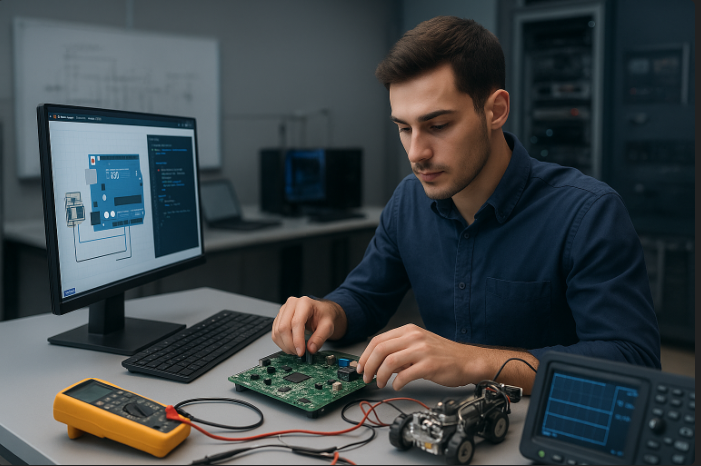

Parcours scolaire
Mes Études
De l'obtention du brevet jusqu'au BUT Science des Données, voici mon cheminement académique.
2017 — 2021
2021 — 2024
Lycée Jean Monnet-Mermoz — Aurillac
Obtention du baccalauréat STI2D (Sciences et Technologies de l'Industrie et du Développement Durable).

2024 — Présent
IUT Clermont Auvergne — Aurillac
Étudiant en BUT Science des Données. Première année validée, actuellement en 2ème année.